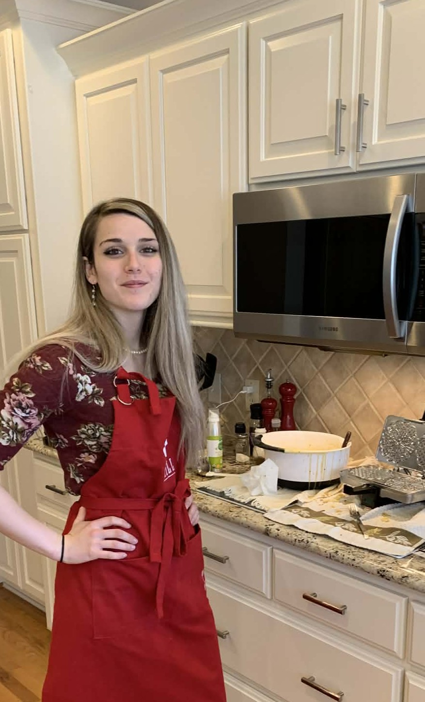

About Me
Hi, I'm Rebecca Decker
I am a passionate front-end web developer focused on creating interactive, accessible, and responsive web experiences. I enjoy building clean and functional interfaces that solve real user problems.
My goal is to grow as a full stack developer while building meaningful, user-centered digital experiences.
Skills & Technologies
Outside of Coding
I enjoy staying active, exploring, and learning new things that keep me inspired:
- Holiday Baking (Family Pizzelle Recipe)
- Hiking and exploring nature trails
- Strength training and fitness
- Coffee shops, restaurants & exploring new towns
- Watching documentaries
- Spending time with loved ones
Career Interests
I am interested in pursuing a career in web development, particularly in industries such as healthcare and clinical research where usability, accessibility, and data accuracy are essential.
While I have not yet built healthcare-specific applications, my academic projects have focused on developing responsive, user-friendly interfaces, working with structured data, and improving accessibility across web experiences.
Transferable Skills
- Responsive Design: Building layouts that adapt across devices and user environments.
- Form Development: Creating structured input systems similar to patient or data intake forms.
- API Integration: Working with external data sources (e.g., weather API) to display dynamic content.
- Accessibility Awareness: Designing with readability and usability in mind for diverse users.
- Problem Solving: Translating user needs into functional, interactive web interfaces.
My goal is to continue developing these skills so I can contribute to meaningful, real-world applications in healthcare or other data-driven environments.